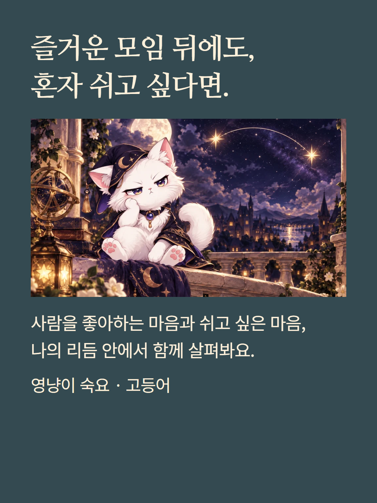
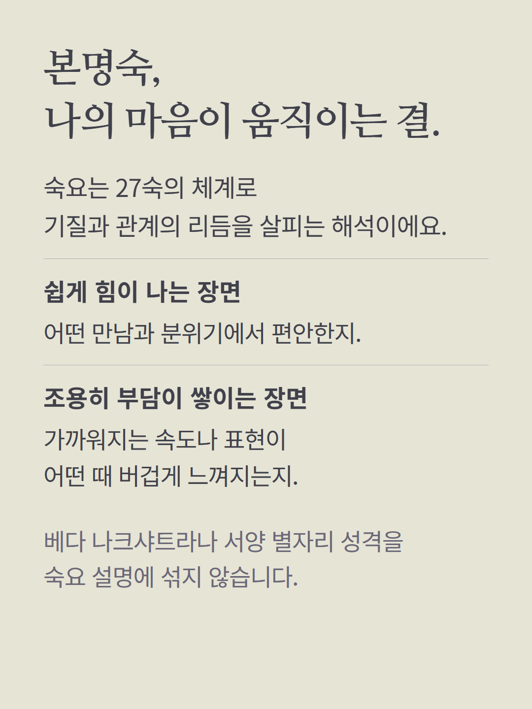
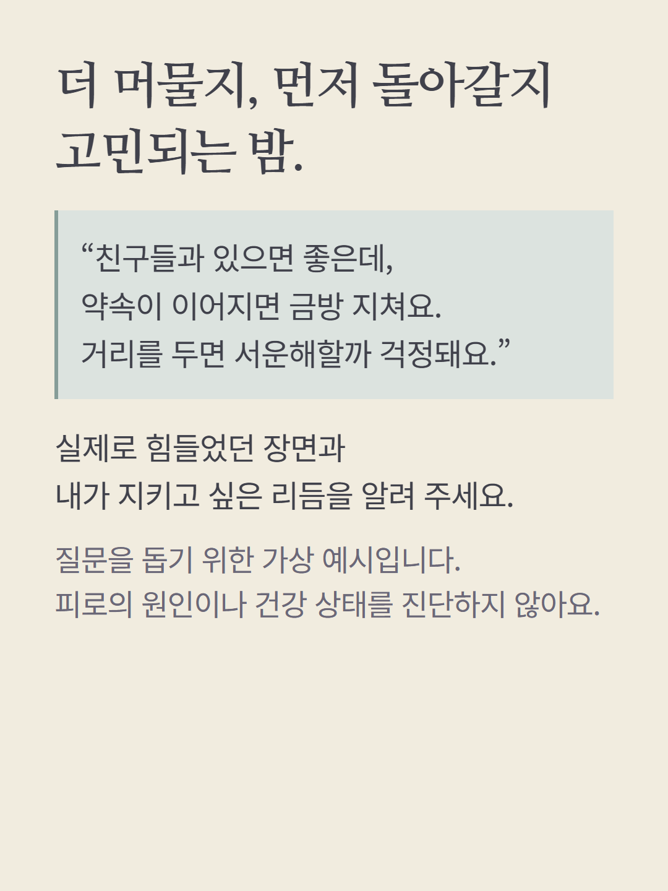
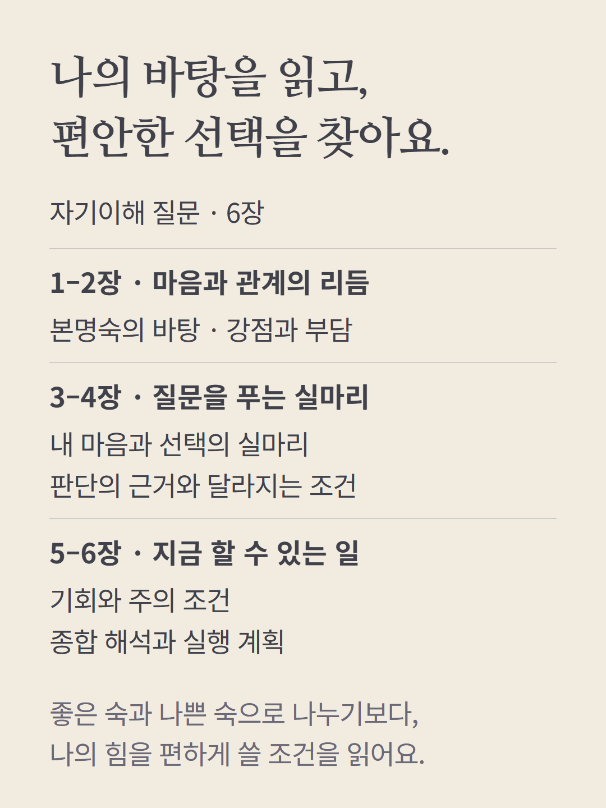
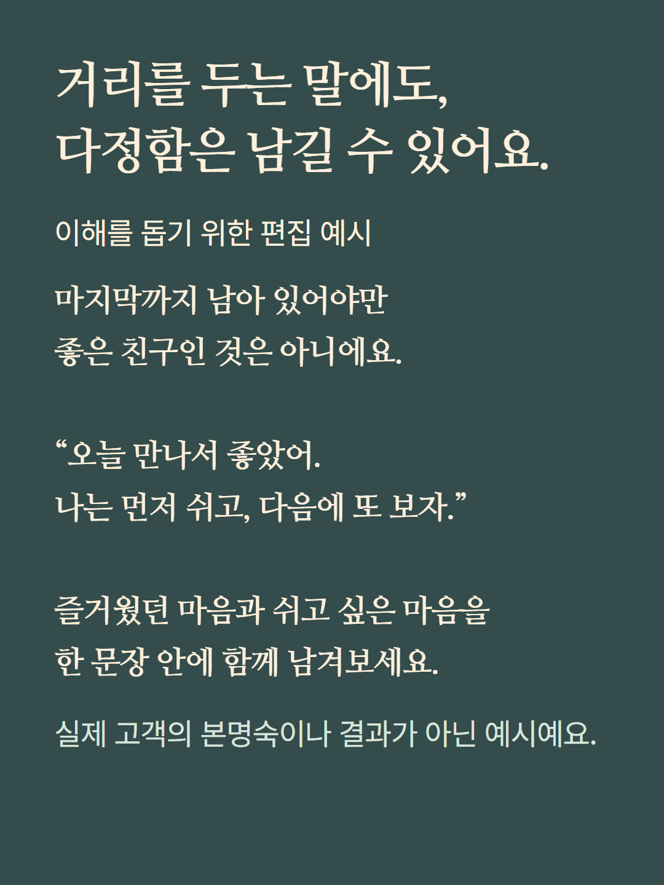
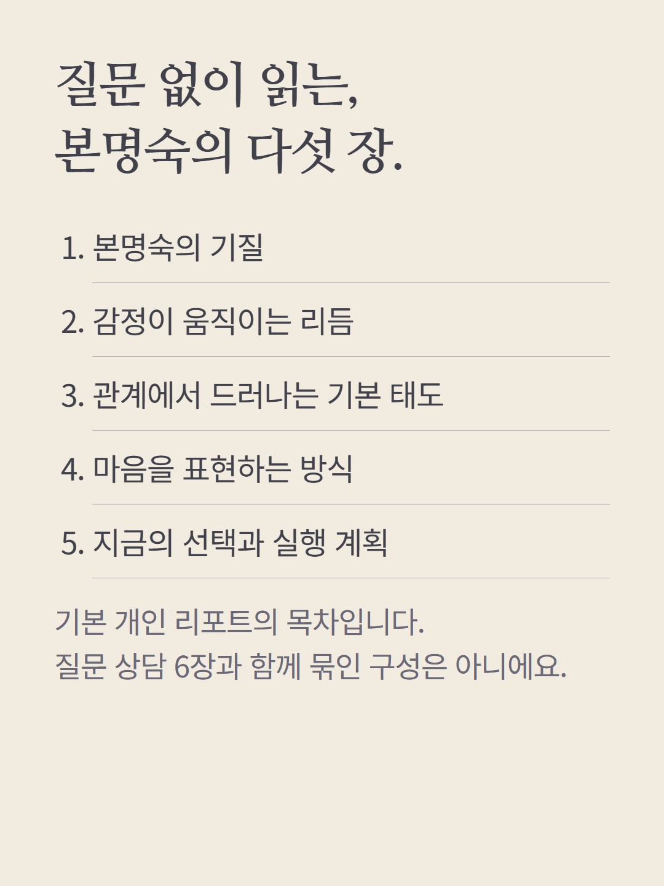
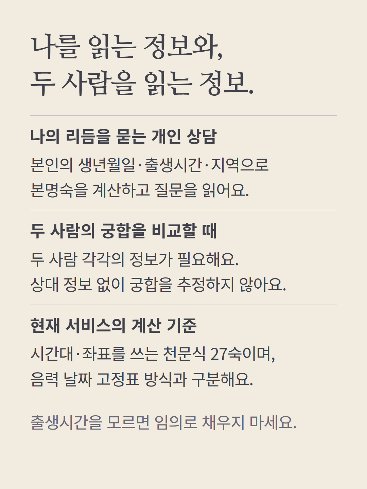
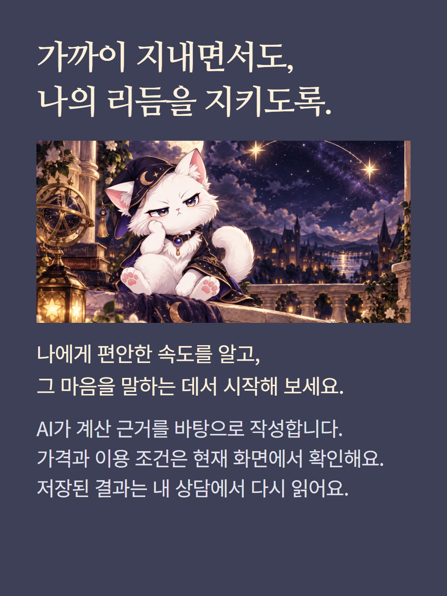

숙요 고등어는 천문식 27숙으로 본명숙과 마음·관계의 리듬을 읽습니다. 자기이해 질문은 6장, 질문 없이 읽는 기본 본명숙 리포트는 5장입니다. 개인 상담은 본인 정보만 쓰며 상대 정보 없이 두 사람의 궁합을 추정하지 않습니다. 두 사람 비교는 관계 유형과 입력을 확인하는 별도 흐름입니다. 이 서비스의 천문식 계산에는 출생시간·지역·시간대가 필요하며 음력 고정표 방식과 구분됩니다. 예시는 가상 편집이고 AI 작성 상담입니다. 가격과 이용 조건은 기존 화면에서 확인하세요.